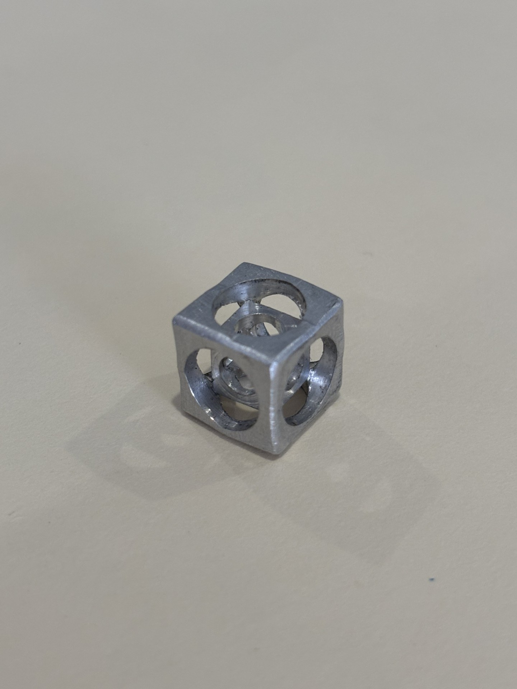

Geometric Machining Cube
Fabricated a geometric cube from a technical drawing by machining features across multiple faces while maintaining alignment between setups. The project emphasized accurate workholding, blueprint interpretation, repeated setup, and dimensional consistency.
View engineering drawing →